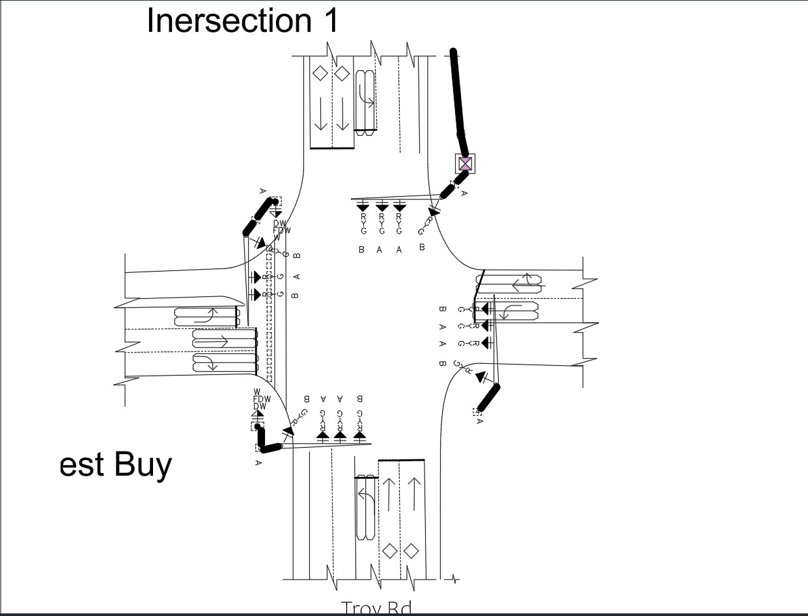
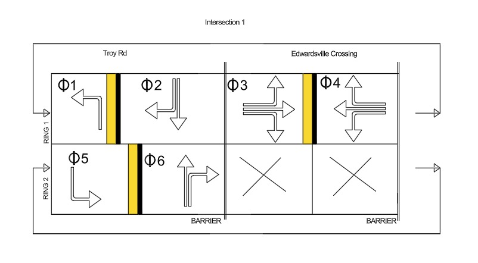
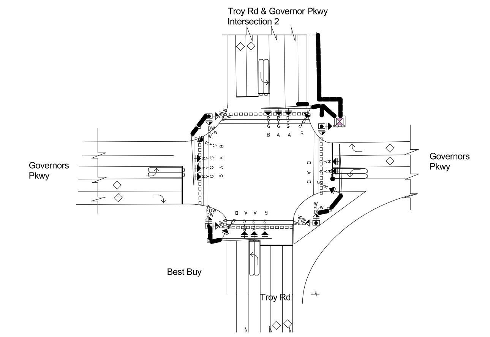
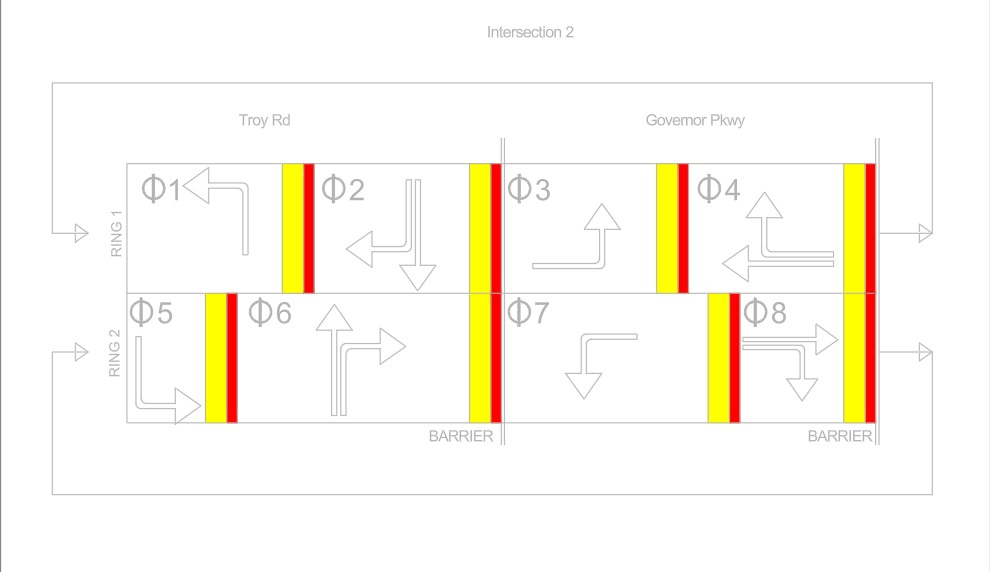

Course team · Traffic signals
Troy Road signal coordination
Coordinated signal timing and emergency vehicle preemption for three Troy Road intersections.
Traffic signals course team · HCM analysis, phasing, coordination, and PTV VissimThe challenge
Coordinating three Troy Road signals while allowing emergency vehicles to interrupt normal operation created a design tension: progression along the arterial could not come at the expense of unsafe or unworkable cross-street service. Our course team studied Edwardsville Crossing, Governor Parkway, and Lavilla Drive using projected 2046 traffic.
How we approached it
We worked from HCM lane-group analysis to phasing and control. The design used a 150-second common cycle, calculated offsets, ring-barrier diagrams, detection, and an emergency vehicle preemption sequence; PTV Vissim supported the No-Build and Build comparison. The intersection layouts and phasing figures show how the proposed control would be translated into an operating concept.
What the work showed
The modeled Build condition brought Troy Road through movements to level of service C or D, while cross-street demand at Governor Parkway and Lavilla Drive remained a capacity problem. The important lesson from the analysis was that timing alone could not meet every movement’s needs; geometric changes were part of the proposed solution. No field installation or measured benefit is claimed.
Selected work
This is a proposed course design under forecast demand, not an installed or field-validated signal system.



